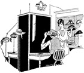
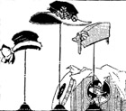

1926—The New-Way Course in Fashionable Clothes-Making
Appendix
"The Millinery Department"
When your little dressmaking shop has reached such proportions that you are able to reinvest your capital and add to your stock, one of the wisest things you could do would be to begin a millinery department. Almost all successful dress shops have such a department. It is certainly a wise way to extend your business and add to your income.
Of course you require a good knowledge of millinery before you can make a millinery department successful. You must be able to make hats that are distinctive, unusual, smart. You must be able to duplicate the hats you see in other shops, and create new styles of your own. It will be an easy matter for you to master the new methods of millinery, now that you are an expert clothesmaker.
The art and technique of millinery, the new quick ways are taught by your school. The School of Modern Dress has prepared for your convenience an up-to-date, simplified course in millinery which is absolutely as complete and exhaustive as it is possible for a millinery course to be. It is designed especially for women who want to master the art of making hats quickly, in the shortest possible time.
If you want to develop your business, if you want to add to it a millinery department, or even if you want to make hats just for yourself and your own particular friends, we urge you to write to us at once for full information regarding the new way of making hats. Be sure to mention that you are already a student of the School of Modern Dress.
Hat-making is fascinating, and the margin of profit in millinery is gratifying. You will find a millinery department a worthwhile addition to your shop.
What You Will Need
Having a millinery department entails additional expenditures which, however, the increased business will warrant. For instance, you will require hat boxes. These should bear the name of the shop on the cover, and should be sufficiently roomy and attractive enough to do justice to the shop and its policies. You will need also display racks for the hats and a showcase for your best stock. Be sure that all the furniture in your shop harmonizes, if it does not match. Sometimes it is difficult to duplicate the type of furniture you purchased some time ago, but you can always have it painted to harmonize.
In making deliveries, have your hats well packed. If you are careful of your merchandise and treat it with great respect, your patrons will do likewise. The hats that are delivered to customers should be packed in neat, attractive boxes bearing the name of the shop. Enough tissue paper should be used to protect the hat and keep it from crushing. If sent by express or parcel post, the ordinary hat box should be enclosed in another of corrugated paper, and the hat should be wrapped carefully in tissue paper to prevent its becoming damaged in any way.
Of Importance
Receipts for merchandise delivered should always be demanded. No slip-shod business methods should be tolerated, as they interfere seriously with success. Keep careful account of expenditures and incomes, make note of the "best sellers," discard those hats you find by experience do not sell and stock up on those you find people like. As in your dress shop, send letters of thanks to customers, pay bills promptly, and send remembrance letters at Christmas and Easter when people are beginning to think of new hats. It is only by adhering strictly to the results of good business, as outlined in previous lessons in this book, that you can hope to build up a profitable and successful patronage.
One thing more; do not attempt to incorporate a side-line of any kind, or a children's clothes or millinery department, until your dress shop itself is being run on a paying basis. To attempt to buoy up a business that is failing by incorporating another department is foolhardy. You only burden yourself with additional expenses and assume the risk of losing all. Instead of doing this, invest every bit of available capital into the dress shop and devote all your energy and attention towards getting new customers, satisfying them, and making the business pay. When you find that your profits warrant additional investments, it is time enough to begin thinking about new ways to increase the business and new departments to incorporate.
You will probably find your first year the hardest. But if you work sincerely to build up a good patronage, if you devote yourself entirely and whole-heartedly to your profession, if you are at all times courteous, fair, energetic, determined to succeed, your business is bound to progress. And after the first year you will probably be amazed to see how quickly success places itself within your grasp!
Clothes Questions Asked and Answered
Are capes and wraps just a vogue, or do they constitute a profitable branch of the dress business? Would it be worth while to have a stock of capes always on hand, or do you think they should just be made when ordered?
While capes are attractive and becoming, they are not always popular. There are sometimes seasons when capes and nothing but capes are in demand, and there are other seasons when no one will want a cape at all. You must suit your stock to the season, and gauge your type of apparel by what is in popular demand. The fashion magazines will keep you in touch with what is being worn and you will be able to keep abreast of the styles.
Is there any particular type of dress I can confine myself to—a sort of "specialty" dress that is always in demand? I want to open a specialty shop of some kind.
Of course there are children's shops that specialize in children's dresses, "hope chest" shops that specialize in bridal finery, maternity shops that specialize in maternity wear. Some dressmakers build up a very profitable business by specializing in frocks for stout women. It requires clever workmanship and deft trimming touches to make clothes that will look smart and pretty on stout people. To gain the reputation of being able to make clothes that make stout people appear slender is to be well on the road towards success.
What is the smallest possible amount with which one can start in business? Must you have a very large capital to open a little dress shop?
Circumstances always alter cases, but under ordinary circumstances a capital of at least $400 is necessary. It is hardly wise to start in business with less capital than that. However, if one already has a profitable clientele and is willing to start very small with just enough furnishings and materials as are absolutely necessary, a capital of $250 can be stretched to cover the initial expenses. Do not attempt this unless you are sure that your monthly income will cover your monthly expenses and leave enough profit over to keep you going.
Which sizes are most in demand in a dressmaking shop?
There is always a demand for sizes 16 and 18. A few styles in these sizes should always be kept on hand. Other sizes which are usually in popular demand are 36, 38 and 42.
Should any commissions be allowed women who bring in new customers? if so, how much should this commission be?
It is a very poor policy to allow commission of any kind to friends or to customers who bring new patronage. While it may be worth the commission to get new customers it takes away from the dignity of the business and makes the shop-owner more or less obligated to her customers. It is much wiser to remember the customers with a card or some such little remembrance at Christmas time, instead of getting her used to the commission idea.
I am very fond of making evening gowns. Would it be possible to open a little shop and specialize in nothing but evening gowns? I could call it the "Evening Gown Shop."
There hardly seems to be enough demand for evening gowns to warrant a specialty shop of this nature. However if you make exquisite gowns and gain a reputation for your creations you may be able to make it pay—particularly if you make the gowns to order and charge estimate prices. In a specialty shop of any kind the secret of success is individuality. If people get to know your shop because it is different from any other in the locality, they will give it preference. The name you mention is not good. "The Shop of Evening Gowns" would be better is it is not so confusing.
What branches of wearing apparel for children are most in demand? Must a specialty shop for children carry such items as caps, sweaters, leggings, coats, etc.?
It is quite profitable to have a specialty shop which carries children's frocks solely. You can have long dresses for infants and short dresses for infants and frocks for little girls up to the age of twelve. However, most specialty shops carry everything children may need in the way of wearing apparel, including booties and shoes for infants. There is a wide margin of profit in coats for children, whether they are retailed or made to order. Sweaters also offer a profitable branch of apparel in the children's specialty shop.
Where is the best place to purchase materials such as velvet, silks, pongees, etc.?
There are a number of wholesale houses where the dressmaker can purchase her materials. It is best to buy only from houses that are well known and have a good reputation. It is also wise to buy all your materials from one or two of such houses, rather than from several, as this tends to keep an even quality through the stock. It is not necessary at first to have an extensive stock of materials. Just china silk and muslin for lining purposes should be kept on hand, and other materials purchased as needed.